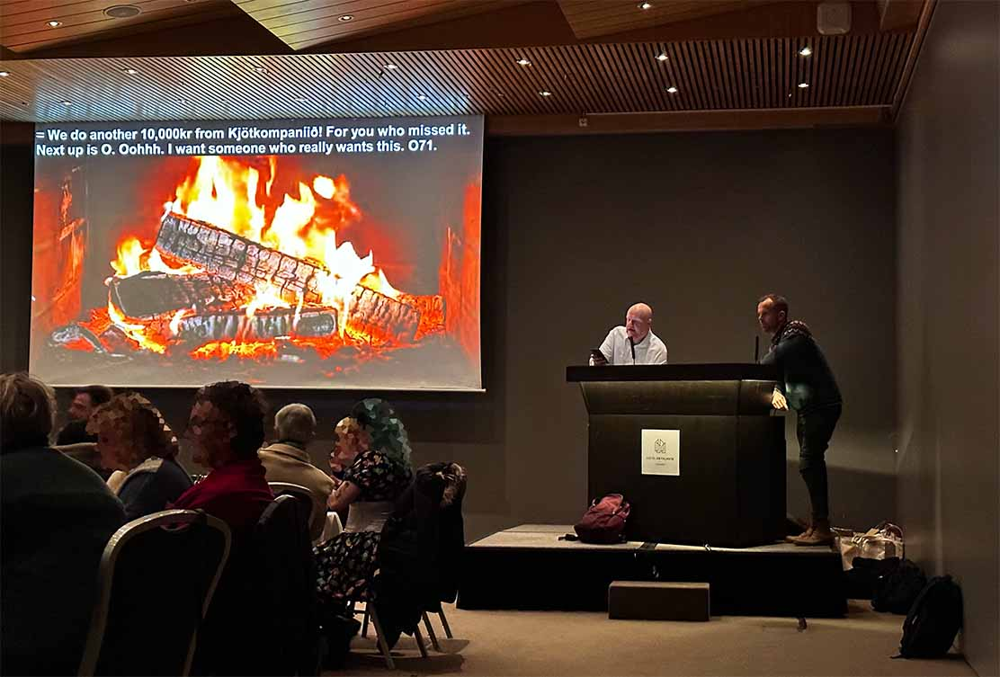

english | íslenska
Ég er sjálfstætt starfandi túlkur og þýðandi.
Á fundum og ráðstefnum þar sem hluti gesta talar ekki íslensku er gott að hafa túlkun — en oft mikil fyrirhöfn. Með því að birta túlkunina sem texta á skjávarpa, meðfram glærum eða á stillimynd, er hægt að forðast það umstang.
Fundurinn getur þá verið á bæði íslensku og ensku og túlkurinn skrifar á hinu málinu. Stéttarfélög, opinberar stofnanir, félagasamtök og fyrirtæki hafa nýtt sér þessa þjónustu með lítilli fyrirhöfn og miklum létti.
Ég býð upp á túlkun milli ensku og íslensku. Sömuleiðis tek ég að mér hefðbundna ráðstefnutúlkun (tal- eða hvísltúlkun) og þýðingar milli ensku og íslensku.
Hafið samband í síma 768-2692, eða gegnum tölvupóstfangið benjaminjulian@proton.me, til að fá frekari upplýsingar.